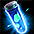

爽やかな葉デイリーミッション
日本のイベント攻略 ＞ 爽やかな葉デイリーミッション
■開催期間
開催・交換：2026年5月21日（木）メンテナンス後～6月25日（木）メンテナンス前。デイリーミッションで爽やかな葉を集めるイベントです。
■デイリーミッション
ミニマップのEVENTからミッションを「開始」し、達成後に「報酬受領」を押します。1日5件まで、1件につき爽やかな葉5個です。リスト更新は1回10万Gold、1日3回まで。
| ミッション内容 | 報酬 |
|---|---|
| 累積ログイン30分記録 | |
| 自分のレベル -200 以上のモンスター 100体退治 | |
| 「RED STONEのマナ(オーラ)」3回解放 | |
| 「混沌の大地」1回クリア | |
| 「試練のダンジョン」1回クリア | |
| 「アスタロト」デイリー討伐1回クリア | |
| 「シュラグ」デイリー討伐1回クリア | |
| 「ファルコン」デイリー討伐1回クリア | |
| 「悪魔ゲリオ」デイリー討伐を1回クリア | |
| 「宝箱(宝物地図)」を1回開封 | |
| モンスターを討伐して「100万ゴールド」を獲得 |
回数は毎日0時にリセット。進行中のミッションは0時を過ぎても残ります。進行中・完了済みのミッションは更新できず、同じミッションは再登場しません。リストと進行はサーバー内のキャラクターで共有します。
1日5件で25個。100体討伐のミッションは、自分のLv－200以上のモンスターが対象です。
■爽やかな葉の交換所
| アイテム名 | 必要な葉 | 期間中上限 | アイテム詳細 |
|---|---|---|---|
| ミニペット変異促進剤 x1 | 70 | 2回 | Lv100の異なる属性のミニペット2体の合成に使用。突然変異率を10ポイント加算。出現時は合成後と突然変異の両方を獲得。 |
| 60 | 2回 | 封印された力を解放。3種の追加効果から選択でき、失敗時も既存の解放を維持する。成功率は低い。銀行取引不可。 | |
| 40 | 2回 | ミニペット2体を同時に活性化。期間3日。銀行取引不可。 | |
| 40 | 2回 | 全ミニペットの期間を15日延長。銀行取引不可。 | |
| 30 | 3回 | 1個以上のオプションを解放したNxユニークに使用し、解放済みオプションをランダムに変換。追加リング・補助武器・投擲爪・壊れた装備には使用不可。銀行取引不可。 | |
| 20 | 3回 | 古竜の魔石を1個生成。高ランクを保証する品ではない。銀行取引不可。 | |
| 10 | 3回 | Nxユニークの封印オプションを10%で1つ解放。失敗時はオプション数を変更しない。銀行取引不可。 | |
 クリーチャー鍛錬の ポーション(小) x1 | 7 | 15回 | クリーチャー経験値＋2300。クリーチャー経験値画面で使用。 |
| 5 | 10回 | クリーチャーのマナ30個分。 | |
| 多次元の結晶 x1 | 1 | 100回 | ディメンション・ハブで得られる装備強化素材。 ※取引不可 |
| 1 | 50回 | 冒険家協会の交換用コイン。 ※取引不可 | |
| 1 | 100回 | HP・CPを80%回復。 |
■全28日のログイン報酬
各日の報酬を受け取って次の日へ進めます。受取先は、道具を使うキャラクターと銀行取引の可否を確認して選びましょう。
| 日数 | アイテム名 | 個数 | アイテム詳細 |
|---|---|---|---|
| 1日 | 20 | 冒険家協会の交換用コイン。 ※取引不可 | |
| 2日 | 1 | Lv1700～1999で、9時間分の経験値の1%を獲得。銀行取引不可。 | |
| 3日 | 30 | 「終焉の森」関連の交換用コイン。 ※取引不可 | |
| 4日 | 5 | 装備の能力を強化する石。 | |
| 5日 | 1 | クリーチャー経験値の育成素材。銀行取引不可。 | |
| 6日 | 1 | Lv2000未満のモンスター討伐経験値を80分間300%増加。1時間の経験値＋200%バフを併せて適用。他の果実と併用でき、同じサンベリー系とは重複しない。イベント期間のみ使用可能。銀行取引不可。 | |
| 7日 | 古代竜の心臓 | 1 | 2分間CPを最大値に維持。同効果の重複使用不可。 |
| 8日 | 1 | クリーチャー経験値の育成素材。 | |
| 9日 | 多次元の結晶 | 20 | ディメンション・ハブで得られる装備強化素材。 ※取引不可 |
| 10日 | 30 | 「終焉の森」関連の交換用コイン。 ※取引不可 | |
| 11日 | 1 | クリーチャーのマナ100個分。 | |
| 12日 | 1 | クリーチャー経験値の育成素材。銀行取引不可。 | |
| 13日 | 5 | 装備の能力を強化する石。 | |
| 14日 | クリーチャー成長促進の秘薬 | 1 | クリーチャーの餌と併用し獲得経験値を増加。必要数は餌によって異なる。 ※取引不可 |
| 15日 | 3 | 効果・使用条件 ※取引不可 | |
| 16日 | 30 | 「終焉の森」関連の交換用コイン。 ※取引不可 | |
| 17日 | ５ | 装備を製錬し、出現する称号の数を増やす。銀行取引不可。 | |
| 18日 | 1 | 効果・使用条件 | |
| 19日 | 3 | 10分間CPを最大値に維持。同効果の重複使用不可。 | |
| 20日 | クリーチャー成長促進の秘薬 | 1 | クリーチャーの餌と併用し獲得経験値を増加。必要数は餌によって異なる。 ※取引不可 |
| 21日 | 3 | Lv2000未満のモンスター討伐経験値を80分間300%増加。1時間の経験値＋200%バフを併せて適用。他の果実と併用でき、同じサンベリー系とは重複しない。イベント期間のみ使用可能。銀行取引不可。 | |
| 22日 | 3 | 効果・使用条件 ※取引不可 | |
| 23日 | 30 | 「終焉の森」関連の交換用コイン。 ※取引不可 | |
| 24日 | 255 | 魔力溶解などで得られるインク。図案書の作成などに使用。 | |
| 25日 | 3 | 同じタイプの水光石を10個獲得。 | |
| 26日 | 3 | 10分間CPを最大値に維持。同効果の重複使用不可。 | |
| 27日 | クリーチャー成長促進の秘薬 | 1 | クリーチャーの餌と併用し獲得経験値を増加。必要数は餌によって異なる。 ※取引不可 |
| 28日 | 3 | ネフォンクリーチャーを1体召喚。銀行取引不可。 |
■おすすめの進め方
ミッション開始→狩り・ログイン→報酬受領の順で進める
ログイン30分・100体討伐・100万Gold・オーラ3回・宝物地図を、表示されたリストから選びます。進めやすいものが足りなければ普段行くデイリー討伐を利用。1日5件の組合せはリスト次第なので、同じ5件を毎日選べる前提にはしません。
目標個数を日数へ直す
| 目標 | 必要な葉 | 5件達成の日数 |
|---|---|---|
| ミニペット変異促進剤2個 | 140個 | 6日 |
| レプリカ封印解放道具箱[E]2個 | 120個 | 5日 |
| 上の2種類を両方 | 260個 | 11日 |
| スロット集中錬成道具箱[E]3個 | 30個 | 2日 |
ミニペット変異促進剤は、Lv100の異なる属性2体を合成するときに使う道具です。合成する予定がある人は2個140枚を目標に、装備強化を進める人は封印解放の道具を選ぶ形にできます。
ミニペット用品は効果と用途を見て選ぶ
ミニツインフレームLite[E]はミニペット2体を3日間同時に活性化する道具、ミニハイパーシャインパウダーLite[E]は全ミニペットの残り期間を15日延長する道具です。所持しているミニペットと使う予定に合わせて選べます。